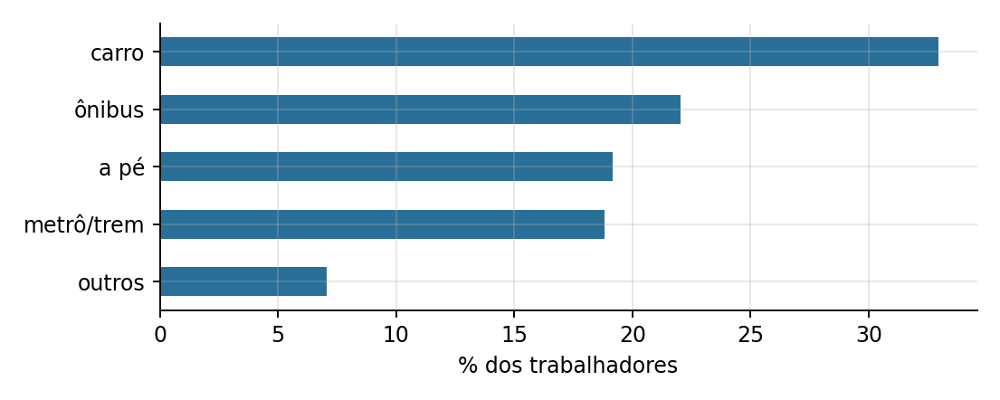
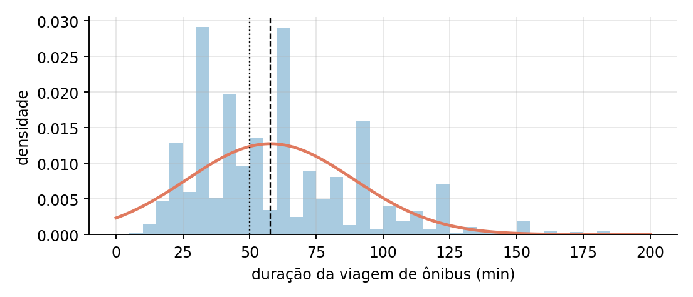
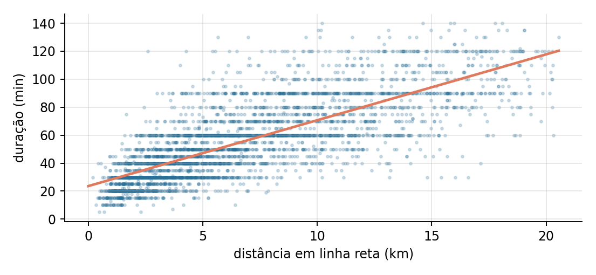
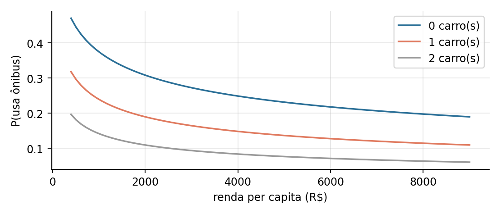

No desafio CitizenTech, o grupo escolheu a mobilidade urbana. Em São Paulo, a oferta de ônibus nem sempre está onde a demanda está, e quem paga a diferença em tempo é o trabalhador. Para apoiar a distribuição da frota, este relatório responde a duas perguntas: quem depende do ônibus para ir ao trabalho, e quanto tempo essa viagem custa.
A base é a Pesquisa Origem e Destino 2017 da Companhia do Metropolitano de São Paulo (Metrô-SP), uma pesquisa domiciliar real com 183.092 registros e 128 variáveis, em que cada linha é uma viagem de uma pessoa em dia útil. O arquivo foi obtido no espelho público do pacote R odbr (endereço no README do repositório), porque o portal de origem estava em manutenção.
A unidade de análise é o trabalhador: a primeira viagem do dia com destino ao trabalho, com origem e destino no município. Usar uma viagem por pessoa evita contar duas vezes a ida e a volta, que são quase iguais, e preserva a independência das observações.
| Etapa de limpeza | Linhas restantes | Removidas |
|---|---|---|
| Base bruta | 183.092 | — |
| Registro é uma viagem | 157.992 | 25.100 |
| Origem e destino em São Paulo | 106.145 | 51.847 |
| Destino é trabalho | 26.778 | 79.367 |
| Pessoa com trabalho regular | 25.228 | 1.550 |
| Sem nulos e renda maior que zero | 24.576 | 652 |
| Primeira viagem a trabalho de cada pessoa | 19.462 | 5.114 |
A base final tem 19.462 trabalhadores. Todas as etapas estão no notebook 01_preparacao e são reproduzíveis.

| Modo principal | Participação | Duração média (min) |
|---|---|---|
| Carro | 32,9% | 30,2 |
| Ônibus | 22,0% | 57,8 |
| A pé | 19,1% | 11,9 |
| Metrô ou trem | 18,8% | 67,1 |
| Outros | 7,1% | 26,5 |
Para os 4.289 trabalhadores que vão de ônibus, a duração tem média de 57,8 minutos, desvio padrão de 31,3 minutos e mediana de 50 minutos. Assumindo distribuição normal com esses parâmetros, como pede o enunciado:
Nos dados reais, a proporção acima da mediana é 0,489. A diferença entre 0,598 e 0,489 mostra que a duração não é simétrica: há poucas viagens muito longas que puxam a média para cima (assimetria de 0,98). A normal é uma aproximação, e essa é uma limitação dos itens que dependem dela.

A referência é a duração de todos os trabalhadores: média de 39,47 minutos e desvio padrão populacional de 31,53 minutos. Foram sorteadas, com semente fixa, uma amostra de 20 trabalhadores que vão de carro e outra de 25 que vão de ônibus, e aplicado o teste Z unilateral.
| Teste | n | Média amostral | z | z crítico | p-valor | Decisão |
|---|---|---|---|---|---|---|
| a) Carro: média menor que a geral (α = 6%) | 20 | 27,55 | −1,69 | −1,55 | 0,046 | rejeita H₀ |
| b) Ônibus: média maior que a geral (α = 9%) | 25 | 69,28 | 4,73 | 1,34 | < 0,001 | rejeita H₀ |
Há evidência de que quem vai de carro leva menos tempo que a média e de que quem vai de ônibus leva mais. O resultado do carro é próximo do limite (p-valor de 0,046 para α de 0,06) e depende da amostra sorteada; o do ônibus é robusto.
Depois de remover 178 valores extremos (4,2%) pelo critério do intervalo interquartil, restaram 4.111 viagens. A covariância entre duração e distância é de 94,9 min·km e a correlação de Pearson é 0,769: associação linear positiva forte.
Duração = 23,6 + 4,7 × distância (km), com R² = 0,592 e F = 5.963 (p-valor praticamente zero).
O intercepto de 23,6 minutos é o tempo que existe mesmo em viagens muito curtas: caminhada, espera e embarque. A inclinação de 4,7 minutos por quilômetro equivale a cerca de 12,7 km/h porta a porta em linha reta. Uma viagem de 10 km deve durar cerca de 71 minutos.

| Variável | Coeficiente | p-valor |
|---|---|---|
| Intercepto | 25,46 | < 0,001 |
| Distância (km) | 4,660 | < 0,001 |
| Renda per capita (R$) | −0,00074 | < 0,001 |
| Automóveis no domicílio | −0,894 | 0,036 |
| Idade (anos) | 0,0051 | 0,797 |
O modelo é significativo (F = 1.507), mas o R² sobe apenas de 0,592 para 0,595. Renda e carros têm efeito estatisticamente detectável e muito pequeno: R$ 1.000 a mais de renda per capita reduzem a viagem em menos de um minuto. A idade não tem efeito. Para a mesma viagem de 10 km (renda per capita de R$ 1.500, sem carro, 35 anos), a previsão continua em 71 minutos.
Conclusão para o gestor: o tempo no ônibus depende de onde a pessoa mora e trabalha, não de quem ela é. Reduzir esse tempo é uma questão de rede (velocidade, frequência, baldeações), não de perfil do usuário.
Foi ajustada uma regressão logística para a probabilidade de o trabalhador usar ônibus como modo principal, com 15.522 trabalhadores no treino e 3.940 no teste. A divisão mantém cada família inteira de um só lado, porque moradores da mesma casa têm a mesma renda e o mesmo carro. A duração não entra no modelo, por ser consequência do modo escolhido.
logit(P) = 2,530 − 0,428·ln(renda per capita) − 0,644·carros + 0,016·distância − 0,006·idade
| Variável | Coeficiente | Razão de chances | Leitura |
|---|---|---|---|
| ln(renda per capita) | −0,428 | 0,65 | mais renda, menos ônibus |
| Automóveis | −0,644 | 0,53 | cada carro reduz a chance em 47% |
| Distância (km) | 0,016 | 1,02 | cada km aumenta a chance em 1,7% |
| Idade | −0,006 | 0,99 | efeito pequeno |

| Limiar | Acurácia | Precisão | Recall | F1 |
|---|---|---|---|---|
| 0,50 (padrão) | 0,782 | 0,294 | 0,024 | 0,045 |
| 0,21 (escolhido no treino) | 0,632 | 0,330 | 0,725 | 0,454 |
| Matriz de confusão (limiar 0,21) | Previsto: não usa | Previsto: usa |
|---|---|---|
| Real: não usa | 1.888 | 1.222 |
| Real: usa | 228 | 602 |
Como só 21% do teste usa ônibus, prever sempre "não usa" já acerta 78,9%. No limiar padrão o modelo tem acurácia parecida (78,2%), mas encontra apenas 2,4% dos usuários: a acurácia sozinha engana quando as classes são desbalanceadas. O limiar de 0,21, escolhido por validação cruzada dentro do treino, encontra 72,5% dos usuários de ônibus ao custo de mais alarmes falsos. Para planejar oferta, deixar de identificar quem depende do ônibus custa mais do que um alarme falso.
A área sob a curva ROC é 0,705: poder de discriminação moderado. Um modelo ampliado, com vínculo de trabalho, ocupação e uma forma não linear para a distância, chega a 0,814; nele, ser assalariado com carteira aumenta a chance de usar ônibus em 51%.
Exemplo de classificação: um trabalhador de 30 anos, a 8 km do trabalho, com renda per capita de R$ 1.000 e sem carro tem probabilidade de 0,38 e é classificado como usuário de ônibus. Com dois carros e renda de R$ 5.000 (45 anos), a probabilidade cai para 0,07.
Fonte dos dados: Companhia do Metropolitano de São Paulo, Pesquisa Origem e Destino 2017. Cálculos, gráficos e modelos: notebooks 01, 02 e 03 da pasta entregas/mlam do repositório.